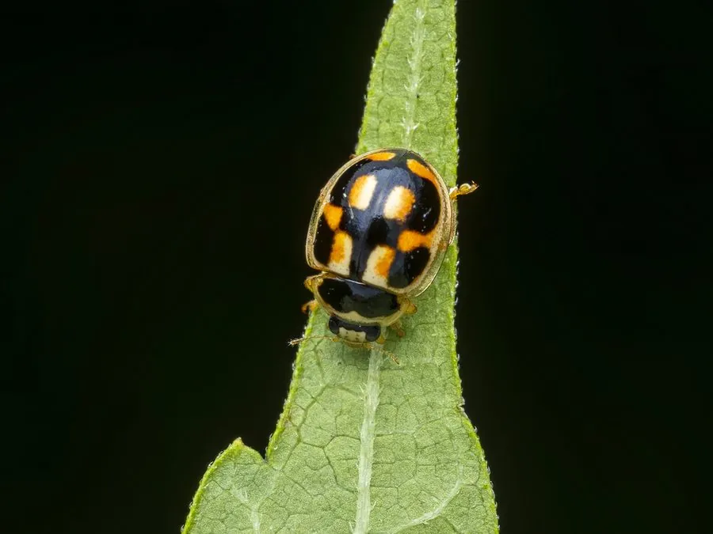

昆虫 · 动物界
龟纹瓢虫 Propylea japonica

东亚常见的捕食性瓢虫，鞘翅上有黑色龟纹状的斑块，成虫和幼虫都捕食蚜虫，是农田里重要的天敌昆虫。
- 分类
- 门节肢动物门纲昆虫纲目鞘翅目科瓢虫科属龟纹瓢虫属
- 栖息环境
- 农田、果园、菜地与草地，常在蚜虫密集的植物上活动
- 地理分布
- 东亚，中国大部分地区及日本、朝鲜半岛、俄罗斯远东
- 保护级别
- 暂无评估
物种志
龟纹瓢虫成虫体长 3.5–4.5 mm，体形呈半球形。它的鞘翅底色为黄色至橙黄色，上面有黑色斑块组成规律的龟纹状图案，不同个体的斑纹变化较大；头部黑色，前胸背板有黑色斑纹，足和触角短。
龟纹瓢虫分布于东亚，包括中国、日本、朝鲜半岛和俄罗斯远东，栖息于农田、果园、菜地和草地。它是捕食性瓢虫，成虫和幼虫都以蚜虫为食，也捕食木虱、粉虱和叶螨，一只幼虫发育期可吃掉数百头蚜虫，是农田中重要的天敌昆虫。龟纹瓢虫每年发生多代，成虫在树缝和枯叶中越冬，春季产卵于蚜虫密集的植物上。它被广泛用于蚜虫的生物防治，与异色瓢虫、七星瓢虫同为中国农田常见的天敌瓢虫。
形态与习性
- 食性成虫和幼虫捕食蚜虫、木虱、粉虱与叶螨
- 体长成虫 3.5–4.5 mm
- 斑纹鞘翅黄色至橙色，黑色斑块呈龟纹状
- 繁殖每年多代，成虫在树缝和枯叶中越冬
- 天敌作用一只幼虫发育期可吃掉数百头蚜虫
- 应用用于蚜虫的生物防治
趣味知识
- 龟纹瓢虫的鞘翅上有黑色龟纹状斑块，因此得名。
- 不同个体的斑纹变化很大，甚至同一批卵孵出的幼虫也不同。
- 成虫和幼虫都捕食蚜虫，是农田里的“活农药”。
- 它每年发生多代，成虫在树缝和枯叶中越冬。